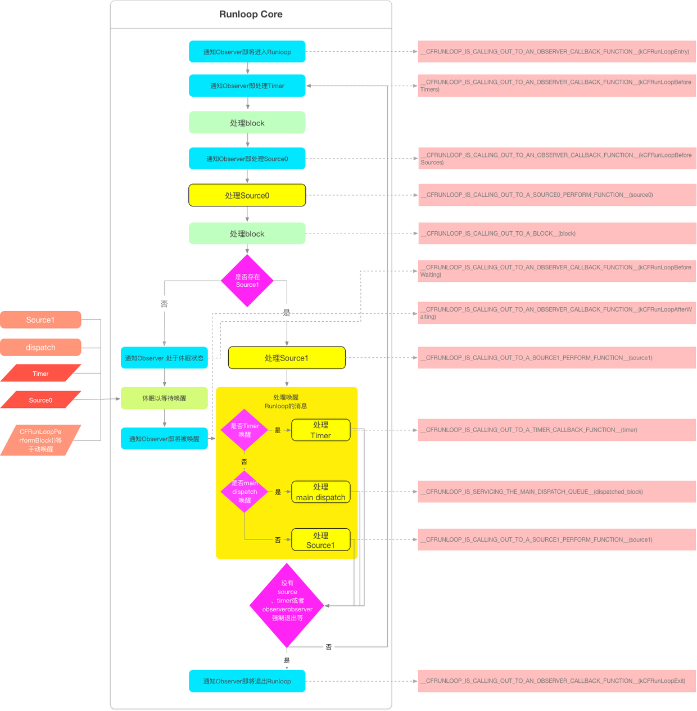

本篇是对这篇文章深入理解Runloop的学习与实践的理解，文字绝大部分是出自这篇文章，可以说是我自己学习总结吧。
- 一：程序是如何保持不退出的？
- 二：Runloop的基础概念与相关API
- 三：RunLoop的内部逻辑
- 四：RunLoop如何在睡眠中等待?
- 六：RunLoop与AutoreleasePool的关系
- 七：事件响应
- 八：手势识别
- 九：界面更新
- 十：动画
- 十一：定时器
- 十二：PerformSelecter
- 十三：GCD（还没具体的研究证实）
- 十四：观察RunLoop的实际调用（很重要）
一：程序是如何保持不退出的？
一个应用就是一段可执行的指令。一段段的指令按照一定的顺序执行，而这样一条执行流顺序就是一个抽象的概念叫“线程”。而提供给执行所需要的内存，计数器，栈，寄存器等独立空间就是进程空间，整个执行流（包括多个子执行流（线程））就是一个抽象概念”进程“。。
在下面的main函数指令执行完后并没有退出程序。那么是如何保证应用程序处于不退出呢？
int main(int argc, char * argv[])
{
@autoreleasepool {
return UIApplicationMain(argc, argv, nil, NSStringFromClass([AppDelegate class]));
}
}
上面的代码是一个iOS应用的main.m应用入口。明显在main执行完后就按理应当退出。但并没有退出。我们可以推测，UIApplicationMain()有一个死循环，而这个死循环要能时刻监听事件并执行事件发生后的程序指令，这个过程就是"EventLoop"，这个循环的关键点：如何管理消息的到来，如何让线程在没有处理消息时休眠以避免资源的浪费，在有消息来时如何立刻被唤醒。所以线程执行完，就一直处于这个函数的内部“接受消息--》处理消息-->等待-->c处理”，直到收到退出的标识。
苹果不循序直接创建Runloop，它只提荣CFRunloopGetMain()与CFRunloopGetCurrent()函数，用懒加载的方式。线程与Runloop是一一对应的。
二：Runloop的基础概念与相关API
iOS里有关于Runloop的类既有OC的API也有CoreFoundation的API.我在查看NSRunloop时API内容简单到已经忽略了很多概念。CoreFoundation里的CFRunLoop对Runloop概念的诠释更加全面。
如下几个核心概念
CFRunLoop,
CFRunLoopMode,
CFRunLoopSourceRef,
CFRunLoopObserverRef,
CFRunLoopTimerRef
CFRunLoopMode
一个Runloop包含若干个Mode,每个Mode包含若干个Source/Timer/Observer。每次调用RunLoop时，只能指定在一个Mode下运行。切换Mode可以切换在不同Mode下的Source/Timer/Observer（NSTimer 这就是为什么要加入指定的Mode才能运行，并且只能在指定的Mode下）。Source/Timer/Observer将其统一称为item ，一个item可以加入到多个Mode,如果一个Mode里一个 item都没有，就不进入循环。typedef CFStringRef CFRunLoopMode CF_EXTENSIBLE_STRING_ENUM; typedef struct CF_BRIDGED_MUTABLE_TYPE(id) __CFRunLoop * CFRunLoopRef; typedef struct CF_BRIDGED_MUTABLE_TYPE(id) __CFRunLoopSource * CFRunLoopSourceRef; typedef struct CF_BRIDGED_MUTABLE_TYPE(id) __CFRunLoopObserver * CFRunLoopObserverRef; typedef struct CF_BRIDGED_MUTABLE_TYPE(NSTimer) __CFRunLoopTimer * CFRunLoopTimerRef;CFRunLoopMode 和 CFRunLoop 的结构大致如下(此部分在开源的Runloop的源码里有，在苹果的库里并没有开放)：
struct __CFRunLoopMode { CFStringRef _name; // Mode Name, 例如 @"kCFRunLoopDefaultMode" CFMutableSetRef _sources0; // Set CFMutableSetRef _sources1; // Set CFMutableArrayRef _observers; // Array CFMutableArrayRef _timers; // Array ... }; struct __CFRunLoop { CFMutableSetRef _commonModes; // Set CFMutableSetRef _commonModeItems; // Set<Source/Observer/Timer> CFRunLoopModeRef _currentMode; // Current Runloop Mode CFMutableSetRef _modes; // Set };特别强调(我以前没有理解将NSTimer添加到kCFRunLoopCommonModes模式的真正含义,哈哈，现在终于弄清楚了)
CFRunLoop里有commonModes,一个Mode可以将自己标记为"Common”属性。CF_EXPORT void CFRunLoopAddCommonMode(CFRunLoopRef rl, CFRunLoopMode mode);。每当RunLoop的模式发生变化时，都会将_commonModeItems里的Source/Observer/Timer同步到具有“Common”标记的Mode里。
例如
主线程的Runloop里有两个预置的Mode:kCFRunLoopDefaultMode，UITrackingRunLoopMode，这两个Mode都已经被标记为"Common"属性。有时你需要一个Timer，在两个Mode中都能回调，一种办法是将这个Timer分别添加到这两个Mode里。还有一种方式，就是将其添加到RunLoop的”commonModelItems"中，“commonModeItems”被RunLoop自动更新到所有具有“Common”属性的Mode里去。还可以自己创建Model,通过
CFRunLoopAddCommonMode(runloop, yourFriendlyCFString);添加commonMode会把commonModeItems数组中的所有source同步到新添加的mode中
//CFRunLoop对外暴露的管理Mode接口只有如下 CFRunLoopAddCommonMode(CFRunLoopRef runloop, CFStringRef modeName);//将一个mode添加common标记 CFRunLoopRunInMode(CFStringRef modeName, ...); //Mode 暴露的管理 mode item的接口有下面几个： //在RunLoop里添加Source,Observer,Timer。并指定Mode。 Boolean CFRunLoopContainsSource(CFRunLoopRef rl, CFRunLoopSourceRef source, CFRunLoopMode mode); void CFRunLoopAddSource(CFRunLoopRef rl, CFRunLoopSourceRef source, CFRunLoopMode mode); void CFRunLoopRemoveSource(CFRunLoopRef rl, CFRunLoopSourceRef source, CFRunLoopMode mode); Boolean CFRunLoopContainsObserver(CFRunLoopRef rl, CFRunLoopObserverRef observer, CFRunLoopMode mode); void CFRunLoopAddObserver(CFRunLoopRef rl, CFRunLoopObserverRef observer, CFRunLoopMode mode); void CFRunLoopRemoveObserver(CFRunLoopRef rl, CFRunLoopObserverRef observer, CFRunLoopMode mode); Boolean CFRunLoopContainsTimer(CFRunLoopRef rl, CFRunLoopTimerRef timer, CFRunLoopMode mode); void CFRunLoopAddTimer(CFRunLoopRef rl, CFRunLoopTimerRef timer, CFRunLoopMode mode); void CFRunLoopRemoveTimer(CFRunLoopRef rl, CFRunLoopTimerRef timer, CFRunLoopMode mode);CFRunLoopSourceRef 事件源。分为Source0,Source1
Source0 只包含了一个回调（函数指针），它并不能主动触发事件。使用时，你需要先调用 CFRunLoopSourceSignal(source)，将这个 Source 标记为待处理，然后手动调用 CFRunLoopWakeUp(runloop) 来唤醒 RunLoop，让其处理这个事件。
Source1 包含了一个 mach_port 和一个回调（函数指针），被用于通过内核和其他线程相互发送消息。这种 Source 能主动唤醒 RunLoop 的线程，其原理在下面会讲到。
CFRunLoopTimerRef是基于时间的触发器，它和NSTimer是toll-frebridged的。当加入到Runloop时，Runloop会注册对应的时间点，当时间点到时，RunLoop会被唤醒以执行那个回到。
CFRunLoopObserverRef是观察者，每个Observer都包含一个回调。当RunLoop的状态发生改变时，观察者就能通过回调接受这个变化。如下是RunLoop的状态
/* Run Loop Observer Activities */ typedef CF_OPTIONS(CFOptionFlags, CFRunLoopActivity) { kCFRunLoopEntry = (1UL << 0),//进入Runllp kCFRunLoopBeforeTimers = (1UL << 1),//即将处理Timer kCFRunLoopBeforeSources = (1UL << 2),//即将处理Sources kCFRunLoopBeforeWaiting = (1UL << 5),//即将进入睡眠 kCFRunLoopAfterWaiting = (1UL << 6),//刚从睡眠职工唤醒 kCFRunLoopExit = (1UL << 7),//退出runloop kCFRunLoopAllActivities = 0x0FFFFFFFU };
三：RunLoop的内部逻辑
此段代码出自最前面提到的文章，我将它贴到此处，便于我自己的理解。
/// 用DefaultMode启动
void CFRunLoopRun(void) {
CFRunLoopRunSpecific(CFRunLoopGetCurrent(), kCFRunLoopDefaultMode, 1.0e10, false);
}
/// 用指定的Mode启动，允许设置RunLoop超时时间
int CFRunLoopRunInMode(CFStringRef modeName, CFTimeInterval seconds, Boolean stopAfterHandle) {
return CFRunLoopRunSpecific(CFRunLoopGetCurrent(), modeName, seconds, returnAfterSourceHandled);
}
/// RunLoop的实现
int CFRunLoopRunSpecific(runloop, modeName, seconds, stopAfterHandle) {
/// 首先根据modeName找到对应mode
CFRunLoopModeRef currentMode = __CFRunLoopFindMode(runloop, modeName, false);
/// 如果mode里没有source/timer/observer, 直接返回。
if (__CFRunLoopModeIsEmpty(currentMode)) return;
/// 1. 通知 Observers: RunLoop 即将进入 loop。
__CFRunLoopDoObservers(runloop, currentMode, kCFRunLoopEntry);
/// 内部函数，进入loop
__CFRunLoopRun(runloop, currentMode, seconds, returnAfterSourceHandled) {
Boolean sourceHandledThisLoop = NO;
int retVal = 0;
do {
/// 2. 通知 Observers: RunLoop 即将触发 Timer 回调。
__CFRunLoopDoObservers(runloop, currentMode, kCFRunLoopBeforeTimers);
/// 3. 通知 Observers: RunLoop 即将触发 Source0 (非port) 回调。
__CFRunLoopDoObservers(runloop, currentMode, kCFRunLoopBeforeSources);
/// 执行被加入的block
__CFRunLoopDoBlocks(runloop, currentMode);
/// 4. RunLoop 触发 Source0 (非port) 回调。
sourceHandledThisLoop = __CFRunLoopDoSources0(runloop, currentMode, stopAfterHandle);
/// 执行被加入的block
__CFRunLoopDoBlocks(runloop, currentMode);
/// 5. 如果有 Source1 (基于port) 处于 ready 状态，直接处理这个 Source1 然后跳转去处理消息。
if (__Source0DidDispatchPortLastTime) {
Boolean hasMsg = __CFRunLoopServiceMachPort(dispatchPort, &msg)
if (hasMsg) goto handle_msg;
}
/// 通知 Observers: RunLoop 的线程即将进入休眠(sleep)。
if (!sourceHandledThisLoop) {
__CFRunLoopDoObservers(runloop, currentMode, kCFRunLoopBeforeWaiting);
}
/// 7. 调用 mach_msg 等待接受 mach_port 的消息。线程将进入休眠, 直到被下面某一个事件唤醒。
/// • 一个基于 port 的Source 的事件。
/// • 一个 Timer 到时间了
/// • RunLoop 自身的超时时间到了
/// • 被其他什么调用者手动唤醒
__CFRunLoopServiceMachPort(waitSet, &msg, sizeof(msg_buffer), &livePort) {
mach_msg(msg, MACH_RCV_MSG, port); // thread wait for receive msg
}
/// 8. 通知 Observers: RunLoop 的线程刚刚被唤醒了。
__CFRunLoopDoObservers(runloop, currentMode, kCFRunLoopAfterWaiting);
/// 收到消息，处理消息。
handle_msg:
/// 9.1 如果一个 Timer 到时间了，触发这个Timer的回调。
if (msg_is_timer) {
__CFRunLoopDoTimers(runloop, currentMode, mach_absolute_time())
}
/// 9.2 如果有dispatch到main_queue的block，执行block。
else if (msg_is_dispatch) {
__CFRUNLOOP_IS_SERVICING_THE_MAIN_DISPATCH_QUEUE__(msg);
}
/// 9.3 如果一个 Source1 (基于port) 发出事件了，处理这个事件
else {
CFRunLoopSourceRef source1 = __CFRunLoopModeFindSourceForMachPort(runloop, currentMode, livePort);
sourceHandledThisLoop = __CFRunLoopDoSource1(runloop, currentMode, source1, msg);
if (sourceHandledThisLoop) {
mach_msg(reply, MACH_SEND_MSG, reply);
}
}
/// 执行加入到Loop的block
__CFRunLoopDoBlocks(runloop, currentMode);
if (sourceHandledThisLoop && stopAfterHandle) {
/// 进入loop时参数说处理完事件就返回。
retVal = kCFRunLoopRunHandledSource;
} else if (timeout) {
/// 超出传入参数标记的超时时间了
retVal = kCFRunLoopRunTimedOut;
} else if (__CFRunLoopIsStopped(runloop)) {
/// 被外部调用者强制停止了
retVal = kCFRunLoopRunStopped;
} else if (__CFRunLoopModeIsEmpty(runloop, currentMode)) {
/// source/timer/observer一个都没有了
retVal = kCFRunLoopRunFinished;
}
/// 如果没超时，mode里没空，loop也没被停止，那继续loop。
} while (retVal == 0);
}
/// 10. 通知 Observers: RunLoop 即将退出。
__CFRunLoopDoObservers(rl, currentMode, kCFRunLoopExit);
}
可以看到，实际上 RunLoop 就是这样一个函数，其内部是一个 do-while 循环。当你调用 CFRunLoopRun() 时，线程就会一直停留在这个循环里；直到超时或被手动停止，该函数才会返回。
从以上可以看出RunLoop就是一个一个有do while的函数。大致思路
用一张图能很好的说明

- 在这里区别一些source0与source1 source0是非基于Port的。只包含了一个回调（函数指针），它并不能主动触发事件。使用时，你需要先调用 CFRunLoopSourceSignal(source)，将这个 Source 标记为待处理，然后手动调用 CFRunLoopWakeUp(runloop) 来唤醒 RunLoop，让其处理这个事件。 source1由RunLoop和内核管理，source1带有mach_port_t，可以接收内核消息并触发回调
source1除了包含回调指针外包含一个mach port，Source1可以监听系统端口和通过内核和其他线程通信，接收、分发系统事件，它能够主动唤醒RunLoop(由操作系统内核进行管理，例如CFMessagePort消息)。官方也指出可以自定义Source，因此对于CFRunLoopSourceRef来说它更像一种协议，框架已经默认定义了两种实现，如果有必要开发人员也可以自定义，详细情况可以查看官方文档。
- 关键还有将现行睡眠，等待消息。那么是如何睡眠的呢？
__CFRunLoopServiceMachPort(waitSet, &msg, sizeof(msg_buffer), &livePort) {
mach_msg(msg, MACH_RCV_MSG, port); // thread wait for receive msg
}
四：RunLoop如何在睡眠中等待?
其实要搞清楚Runloop如何停下循环进入睡眠（在我们程序的概念里，大家从Runloop内部实现可以看出，是一个do while循环，循环的过程其实也是消耗资源的,所以才去睡眠来防止消耗资源）
休眠的函数调用的函数时mach_msg()。
在微内核Mach中，所有的东西都是通过自己的对象实现的，进程，线程，虚拟内存都被称作"对象“。和其他架构不同,Mach的对象间不能直接调用，只能通过消息传递的方式，这就是Mach的IPC(进程通信)的核心。
为了实现消息的发送和接收，mach_msg()函数实际上是调用了一个Mach陷阱(trap)，即函数mach_msg_trap(),陷阱这个概念在Mach中等同与系统调用。当你在用户态调用mach_msg_trap()时会触发陷阱机制，切换到内核态，内核态中内核实现的mach_msg()函数完成实际的工作。若果么有别人发送port消息过来，内核会将线程置于等待状态。例如，当APP静止时点击暂停，会看到主线程调用栈停留在mach_msg_trap()这里。
六：RunLoop与AutoreleasePool的关系
App启动后，苹果在主线程 RunLoop 里注册了两个 Observer，其回调都是 _wrapRunLoopWithAutoreleasePoolHandler()。
第一个 Observer 监视的事件是 Entry(即将进入Loop)，其回调内会调用 objcautoreleasePoolPush() 创建自动释放池。其 order 是-2147483647，优先级最高，保证创建释放池发生在其他所有回调之前。
第二个 Observer 监视了两个事件：BeforeWaiting(准备进入休眠) 时调用_objc_autoreleasePoolPop() 和 objcautoreleasePoolPush() 释放旧的池并创建新池 ；Exit(即将退出Loop) 时调用 objcautoreleasePoolPop() 来释放自动释放池。这个 Observer 的 order 是 2147483647，优先级最低，保证其释放池子发生在其他所有回调之后。
在主线程执行的代码，通常是写在诸如事件回调、Timer回调内的。这些回调会被 RunLoop 创建好的 AutoreleasePool 环绕着，所以不会出现内存泄漏，开发者也不必显示创建 Pool 了。
kCFRunLoopEntry; // 进入runloop之前，创建一个自动释放池
kCFRunLoopBeforeWaiting; // 休眠之前，销毁自动释放池，创建一个新的自动释放池
kCFRunLoopExit; // 退出runloop之前，销毁自动释放池
七：事件响应
苹果注册了一个 Source1 (基于 mach port 的) 用来接收系统事件，其回调函数为 __IOHIDEventSystemClientQueueCallback()。
当一个硬件事件(触摸/锁屏/摇晃等)发生后，首先由 IOKit.framework 生成一个 IOHIDEvent 事件并由 SpringBoard 接收。这个过程的详细情况可以参考这里。SpringBoard 只接收按键(锁屏/静音等)，触摸，加速，接近传感器等几种 Event，随后用 mach port 转发给需要的App进程。随后苹果注册的那个 Source1 就会触发回调，并调用 _UIApplicationHandleEventQueue() 进行应用内部的分发。
_UIApplicationHandleEventQueue() 会把 IOHIDEvent 处理并包装成 UIEvent 进行处理或分发，其中包括识别 UIGesture/处理屏幕旋转/发送给 UIWindow 等。通常事件比如 UIButton 点击、touchesBegin/Move/End/Cancel 事件都是在这个回调中完成的。
总结下：屏幕硬件接收事件--->给SprindBoard(桌面)应用程序-->通过mach_port进程间通信给本应用（进程）--->进入主线程的runloop---》处理事件进入事件队列处理执行
八：手势识别
(这里可以深入的思考，手势识别与touch事件向冲突时如何处理的)
九：界面更新
当在操作 UI 时，比如改变了 Frame、更新了 UIView/CALayer 的层次时，或者手动调用了 UIView/CALayer 的 setNeedsLayout/setNeedsDisplay方法后，这个 UIView/CALayer 就被标记为待处理，并被提交到一个全局的容器去。
苹果注册了一个 Observer 监听 BeforeWaiting(即将进入休眠) 和 Exit (即将退出Loop) 事件，会去调用执行一个很长的函数：
_ZN2CA11Transaction17observer_callbackEP19__CFRunLoopObservermPv()。这个函数里会遍历所有待处理的 UIView/CAlayer 以执行实际的绘制和调整，并更新 UI 界面。
说明:总结就是在进入睡眠前，会计算好，绘制好界面。等待垂直时钟从缓冲区取帧数据。
这个函数内部的调用栈大概是这样的：
_ZN2CA11Transaction17observer_callbackEP19__CFRunLoopObservermPv()
QuartzCore:CA::Transaction::observer_callback:
CA::Transaction::commit();
CA::Context::commit_transaction();
CA::Layer::layout_and_display_if_needed();
CA::Layer::layout_if_needed();
[CALayer layoutSublayers];
[UIView layoutSubviews];
CA::Layer::display_if_needed();
[CALayer display];
[UIView drawRe_ZN2CA11Transaction17observer_callbackEP19__CFRunLoopObservermPv()
QuartzCore:CA::Transaction::observer_callback:
CA::Transaction::commit();
CA::Context::commit_transaction();
CA::Layer::layout_and_display_if_needed();
CA::Layer::layout_if_needed();
[CALayer layoutSublayers];
[UIView layoutSubviews];
CA::Layer::display_if_needed();
[CALayer display];
[UIView drawRect];
十：动画
Runloop与动画其实与绘制差不多。当要提交动画时，UIKit或者是CoreAnimation会向Runloop注册通知，并将其提交到渲染系统，包括动画结束的通知。也就是当动画结束后，runloop会被这些observer唤醒。（runloop的唤醒其实都是timer,source0,source1,observer都可以唤醒,特别需要说明的是performSeletor是通过timer唤醒）
十一：定时器
- NSTimer
其实就是 CFRunLoopTimerRef，他们之间是 toll-free bridged 的。一个 NSTimer 注册到 RunLoop 后，RunLoop 会为其重复的时间点注册好事件。例如 10:00, 10:10, 10:20 这几个时间点。RunLoop为了节省资源，并不会在非常准确的时间点回调这个Timer。Timer 有个属性叫做 Tolerance (宽容度)，标示了当时间点到后，容许有多少最大误差。
如果某个时间点被错过了，例如执行了一个很长的任务，则那个时间点的回调也会跳过去，不会延后执行。就比如等公交，如果 10:10 时我忙着玩手机错过了那个点的公交，那我只能等 10:20 这一趟了。
GCD Timer
GCD Timer 是通过 dispatch port 给 RunLoop 发送消息，来使 RunLoop 执行相应的 block，如果所在线程没有 RunLoop，那么 GCD 会临时创建一个线程去执行 block，执行完之后再销毁掉，因此 GCD 的 Timer 是不依赖 RunLoop 的。CADisplayLink
CADisplayLink 是一个和屏幕刷新率一致的定时器（但实际实现原理更复杂，和 NSTimer 并不一样，其内部实际是操作了一个 Source）。如果在两次屏幕刷新之间执行了一个长任务，那其中就会有一帧被跳过去（和 NSTimer 相似），造成界面卡顿的感觉。在快速滑动TableView时，即使一帧的卡顿也会让用户有所察觉。Facebook 开源的 AsyncDisplayLink 就是为了解决界面卡顿的问题，其内部也用到了 RunLoop，这个稍后我会再单独写一页博客来分析。
十二：PerformSelecter
当调用 NSObject 的 performSelecter:afterDelay: 后，实际上其内部会创建一个 Timer 并添加到当前线程的 RunLoop 中。所以如果当前线程没有 RunLoop，则这个方法会失效。
当调用 performSelector:onThread: 时，实际上其会创建一个 Timer 加到对应的线程去，同样的，如果对应线程没有 RunLoop 该方法也会失效。
十三：GCD（还没具体的研究证实）
十四：观察RunLoop的实际调用（很重要）
这个等有机会在实践吧
实践思路，操作一个事件，看runloop的反应
如。Time事件，手动添加一个事件源source0,触摸事件的事件源(基于端口的事件源)